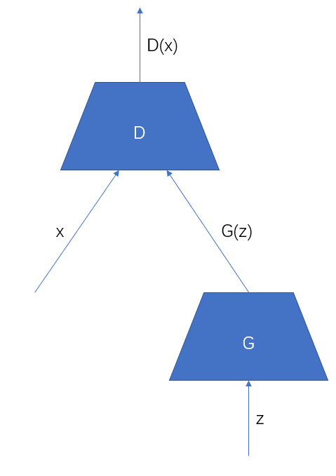
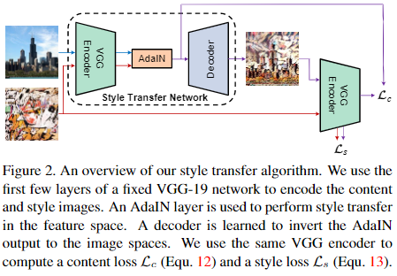
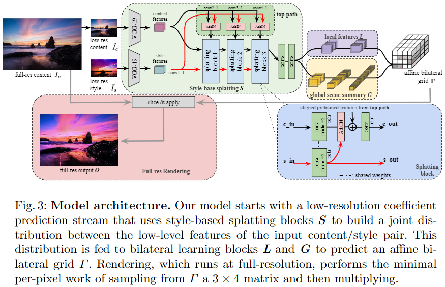

GAN在深度学习领域是生成对抗网络（Generative Adversarial Network）的简称，第一次是在论文《Generative Adversarial Nets》中提出，论文Abstract中第一句话就点出了GAN的本质“a new framework for estimating grnerative models via an adversarial process”，即GAN是通过一种对抗过程来训练（估计）生成模型的一种框架。
GAN的基础结构
GAN的简陋示意图如下所示。

其中$D$表示判别器模型，$G$表示生成器模型，$G$从一个隐空间中随机采样得到隐变量$z$，将其生成为$G(z)$，用于模拟真实数据$x$，判别器$D$则接收一个输入，这里不是同时接收$x$和$G(z)$，判别器本质上是个分类模型，他不知道自己接收到的数据是生成器生成的$G(z)$还是真实数据$x$，判别器的工作就是将$G(z)$和$x$分成两类，即判别数据的真假。在GAN的架构中，生成器$G$努力构造虚假数据，其最终目的是让判别器无法判别$G(z)$和$x$的差别，而判别器$D$的目的则努力将$G(z)$找出来，判别器和生成器构成了一种对抗的关系，在训练过程中，不断提高两种模型的效果，最终就可以得到效果以假乱真的生成器$G$，这样的生成器就可以用于数据（图像、音频等）的生成。
GAN的损失函数
在原始论文《Generative Adversarial Nets》中，GAN中的判别器和生成器的损失函数分别定义如下，其中$P_R$代表数据的真实分布，$P_G$代表生成器所生成的数据分布，从损失函数中就可以看出两个模型的对抗关系。
在生成器$G$固定的时候，最优的判别器可以写为$D^*(x) = \frac{P_R(x)}{P_R(x) + P_G(x)}$，这里$P_R(x)，P_G(x)$分别表示数据来源于真实数据和生成数据的概率，当分布$P_R$和$P_G$很近或者直接重叠的时候，就代表生成器达到最优，即生成数据的分布和真实数据分布相同了。
条件生成对抗网络（CGAN， Conditional Generative Adversarial Network）
GAN可以生成样本，那么是否可以指定生成的样本是什么，例如能够指定生成一个包含猫的图片？
在论文《Conditional Generative Adversarial Nets》中，条件GAN提供了一种思路。
原始的GAN可以表达为$\min\limits_G\max\limits_D V(D, G) = E_{x \sim P_R}log(D(x)) + E_{z \sim P_Z}log(1 - D(G(z)))$
而在条件GAN中，变成了$\min\limits_G\max\limits_D V(D, G) = E_{x \sim P_R}log(D(x|y)) + E_{z \sim P_Z}log(1 - D(G(z, y) | y))$
在CGAN论文中，使用CGAN来生成手写数字，其生成器输入包括100维的随机隐变量以及10维的one-hot编码类别向量，判别器输入包括784维的图像以及10维的one-hot类别向量。
深度卷积生成对抗网络（DCGAN，Deep Convolutional Generative Adversarial Networks）
在论文《Unsupervised Representation Learning with Deep Convolutional Generative Adversarial Networks》中第一次采用深度卷积神经网络来代替GAN中的生成器和判别器（以前都是使用MLP），对于生成器，可以使用上采样加卷积的方式来生成最终的图像，而对于判别器，类似于普通的分类模型，只不过在下采样的时候不适用池化操作，而是使用步长大于1的卷积操作，另外不论是判别器还是生成器，除了输入输出层，其他层都使用Batch Normalization层来稳定梯度，加速模型的收敛。
WGAN
GAN的思路看起来很完美，但是原始的GAN loss存在一些问题，这些问题在后面的论文《Wassertein GAN》中提到并解决，这一部分内容可以参考知乎上的一篇文章分析：令人拍案叫绝的Wasserstein GAN，或者直接看原论文。
总的来说，分析可以发现原GAN的论文中生成器模型的损失函数其实就是在最小化分布$P_G$和$P_R$之间的KL散度，而KL散度存在的一个问题是：当分布$P_G$和分布$P_R$没有交集时，KL散度始终为$log2$，不能提供有效的梯度，从而导致GAN训练困难，而WGAN利用Wasserstein距离来代替KL散度以度量两个分布$P_G$、$P_R$之间的距离。
Wasserstein距离也称作Earch-Mover(EM)距离，可以写为
这里$\prod(P_R, P_G)$表示$P_G$、$P_R$的联合分布，对于所有的联合分布，求$\{x,y\}$的距离期望的最小值，就是Wasserstein距离，这里可以仔细理解下为什么Wasserstein距离不存在KL散度的那种无法适用于无交集的两个分布的问题。
这里有个问题是Wassertein距离在模型中是无法计算的，因此WGAN论文中用一些近似手段，将Wassertein距离近似表示为如下计算方式。
这里$f_w$表示一个神经网络或者CNN所构成的判别器所表示的函数，$|f_w|_L$表示这个函数的Lipschitz常数（如果$\exist K, \forall x_1, x_2 \ |f(x_1) - f(x_2)| \le K|x_1 - x_2|$那么$K$就是函数$f$的Lipschitz常数）。
因此我们将GAN的判别器损失改为$-E_{x \sim P_R}f_w(x) + E_{x \sim P_G}f_w(x)$，这样一来，判别器的目标不再是一个分类问题，而是求$\max\limits_{|f_w|_L \le K} E_{x \sim P_R}f_w(x) - E_{x \sim P_G}f_w(x)$以近似Wasserstein距离，因此需要去掉判别器中的sigmoid层，同时为了保证$|f_w|_L \le K$，这里需要将判别器模型中的参数值限定在一定范围内，这可以通过参数的clip操作来实现。
判别器训练好之后，训练生成器时，损失函数使用$-E_{x \sim P_G}f_w(x)$（这个意思是将近似的Wasserstein距离作为损失函数来优化，缩小Wasserstein距离）即可。
和之前的GAN loss相比的话，WGAN相当于仅仅做了三个修改：
- 去掉判别器损失和生成器损失中的log
- 去掉判别器的sigmoid
- 判别器的参数每次更新之后需要进行clip，以保证参数在一定范围内。
另外一个trick是：GAN的训练不适合使用Adam这类基于动量的算法，因为每次生成器的更新后，判别器的loss梯度非常不稳定，甚至和之前的方向完全相反，基于动量优化容易导致收敛缓慢。
GAN的应用方向以及发展
上面介绍了GAN的几个主要的基础发展方向，接下来看看GAN应用领域方面的具体问题。
图像生成
GAN的老本行就是生成数据，图像数据自然包括在内，但是早期的GAN生成的图像清晰度低且内容混乱，近年来在高清图像生成方面有了一些进展。
未完待续…
图像风格迁移
下面是在论文阅读过程中遇到的一些基础概念。
Gram矩阵
Gram矩阵可以看做是feature之间的偏心协方差矩阵，例如对于一个$C \times H \times W$的特征图，首先将特征图进行resize得到特征矩阵$M \in R^{C \times HW}$，然后计算Gram矩阵为$M \times M^T$，Gram矩阵对角线上的元素表示不同特征在图像上出现的强度，非对角线上的元素则表示不同特征之间的相关性，因此Gram矩阵可用于表示图像的整体风格。
双边滤波（BF，Bilateral Filter）
首先，一般的高斯滤波器可以表示如下：
其中$J$表示输出图像，$I$表示输入图像，$p,q$表示位置，$\Omega_p$表示$p$的一个邻域，$f$表示高斯核函数，$K_p$表示该位置的归一化因子，这样的滤波考虑到了像素之间的相对位置关系，虽然可以有效的去躁，但是对于一些图像边缘非常不友好，容易将边缘模糊化。
基于上面的问题，双边滤波考虑再引入像素之间的像素值关系，将滤波过程表达为如下：
这里的$g$同样为一个高斯核函数，$||I_p - I_q||$表达的是两个位置之间的像素值差异，双边的意思即同时考虑相对位置信息和像素值信息，用这种方式进行滤波，对于边缘比较友好。
双边网格（Bilateral Grid）
双边滤波其实运行起来很慢，需要对其进行加速，因此就有了双边网格的概念，一个灰度图像$I$大小为$H \times W$，其实可以表示为$H \times W \times B$大小的一个三维格式，这个三维格式就是双边网格，其中最后一维表示灰度值，图像$I$上的一个位置$(x, y)$的点，其像素值为$I_{xy}$，那么在双边网格中，这个点的位置就变成了$(y, x, I_{xy})$，另外如果是一个uint8类型的灰度图，那么似乎$B$必须为256，但是这里其实可以做一定的区间划分以压缩$B$的大小，例如划分为10个区间，那么$B$的大小就只需要10了。同理，对$H$和$W$两个维度也可以进行压缩，从而将一个二维图像表示为双边空间（可以理解为双边网格对应的大小为$H \times W \times B$的空间）中的点的集合，这个过程叫做splat，在双边空间中做完双边滤波之后，再通过插值（一般使用三线性插值）的方式，从双边空间中恢复原始的大图像，这个过程称为slice。
slice的具体操作我没有找到说明，按照我的理解，大概是对于原始图像$I$上的一个点$(x,y)$，那么可以通过对双边空间中$(x, y, I_{xy})$这个坐标进行三线性插值，得到输出图像上$(x,y)$位置的值。
联合双边滤波（JBF，Joint Bilateral Filter）以及联合双边上采样（JBU，Joint Bilateral Upsampling）
在双边滤波的基础上，引入一张其他图像来引导滤波过程，可以写作下式：
其中$\hat{I}$表示一张其他图像。
联合双边上采样使用的就是联合双边滤波的思路，假设现在有一张很大的图像$I$，对其进行某种处理非常耗时间，如果想要加速这个处理过程，那么可以考虑先将图像缩小得到图像$S$，然后在缩小的图像上进行处理,得到图像$\hat{S}$，最后将缩小的图像resize回原大小得到图像$\hat{I}$。
上面的思路很简单，但是这里有个主要的问题是如果使用传统的插值方式（例如双线性插值、最近邻插值等），$\hat{S}$直接上采样得到的$\hat{I}$往往非常不清晰，但这里不是一个传统的resize问题，因为这里还有图像$I$可以用于参考，因此就可以考虑在插值之后使用联合双边滤波对插值之后的图像进行进一步处理，提高清晰度，首先$\hat{S}$直接上采样(一般使用最近邻插值就可以)得到$U(\hat{S})$，然后用原始图像$I$引导进行联合双边滤波，得到最终的$\hat{I}$，如下所示：
下面记录一下看过的一些风格转换相关的论文
论文《Arbitrary Style Transfer in Real-time with Adaptive Instance Normalization》
这篇论文中构建了一个端到端的进行风格转换的模型，模型在预测时可以选择任意的style图片，而不是固定为训练过程中使用的style图片。其主要思想是认为style在CNN特征图中表达为特征的方差和均值，因此这个论文中使用一个Adaptive Instance Normalization（AdaIN）模块，通过计算style图片的特征图的Instance Normalization均值和方差，然后将content图片的特征图均值和方差按照style图片的均值和方差进行缩放，然后将该特征图进行解码，得到风格转换之后的图片。
该方案的整体结构图如下所示，content图片和style图片都首先经过一个固定的预训练VGG-19模型编码，得到两个特征图，两个特征图输入到AdaIN模块中，用于根据style图片的特征图调整content图片的特征图的特征均值和方差，调整后的content特征图再通过一个解码器得到风格转换之后的输出，最后将输出图片再通过同样的VGG-19编码器进行编码，使用编码之后的输出计算content损失和style损失。

其损失函数设计如下，其中$L$是总的损失，由两部分组成，一个是content损失$L_c$，一个是style损失$L_s$，$L_c$是由模型输出$f(g(t))$和经过了AdaIN的特征图$t$计算，$f$表示编码器，$g$表示解码器。$L_s$是由编码器VGG的不同层特征$\phi_i$计算，这里只监督不同层特征的统计量，例如$\mu$表示特征的均值，$\sigma$表示特征的标准差。
该文章实现了一个端到端的，可以使用任意style图片的风格转换任务，但是其缺点在于容易造成content的改变，我认为是因为这里没有一个独立的content编码分支造成的，或许可以从这里入手做一些改变，但是另一篇论文从双边联合滤波的角度给出了一种不同的方案，如下。
论文《Joint Bilateral Learning for Real-time Universal Photorealistic Style Transfer》
该论文尝试将风格转换问题设计为一个图像局部transform的问题，让模型去在低分辨率图像上去学习出一个transform系数，然后将transform系数应用于高分辨率图像以完成快速的高分辨率图像的风格转换处理工作，很大程度上借鉴了HDRnet，关于HDRnet的简单介绍可以参考我写的另一篇论文阅读记录论文阅读《Deep-Bilateral-Learning-for-Real-Time-Image-Enhancement》。
论文中整体的模型结构如下图所示。

首先将低分辨率的content图片和低分辨率的style图片用VGG-19进行encoding，上面的top path部分主要是将VGG-19中conv2_1、conv3_1、conv4_1对应的特征图拿出来分别经过AdaIN层，以根据style图特征调整content图的特征，最终得到调整style后的不同分辨率的特征，下面的一个分支主要有三个splatting block组成，其结构可以参考图片右下角，主要是在学习Bilateral grid的splat操作，同时考虑到了style信息，因此使用了AdaIN层来对不同阶段的特征进行调整，因此这个叫做Style-base splatting，最终的特征还是和HDRnet一样，分成局部特征的学习和全局特征的学习，最后将局部特征和全局特征混合为双边网格$\Gamma$，作为即将对原图进行局部变换的系数，最后将双边网格以原分辨率图为guide图像进行slice操作插值到原分辨率大小的变换系数图，然后apply到原分辨图上，得到风格转换之后的输出图。
该论文的损失函数设计如下，这里的$L_c$和$L_sa$其实和论文《Arbitrary Style Transfer in Real-time with Adaptive Instance Normalization》中的$L_c$和$L_s$类似，这里的$F_i$表示VGG的中间层特征输出，$N_c$表示取的中间层的个数，$I_c$表示低分辨率的content图片，$I_s$表示低分辨率的style图片，$\mu$和$\sigma$分别表示统计均值和标准差。这里新增了一个$L_r$损失，其中$s$表示双边网格上的一个位置，$N(s)$表示双边网格的$s$位置的邻域（论文里用的是6邻域），这一项损失主要是希望相邻的位置的仿射变换差别不大，使得其变换更加平滑。另外对于三个损失的系数，论文中使用的是$\lambda_c= 0.5，\lambda_sa =1，\lambda_r = 0.15$
这个方法在style转换任务中主要的好处是速度快，而且很大程度上保留图片的内容信息，因为其transform过程仅仅针对原始图片上单像素的颜色变换，但是也正是这个原因，这个transform也存在和HDRnet一样的限制，例如在艺术风格的转换任务上（这个不是简单的颜色变换可以完成的）上效果就不是那么明显了，不过对于一般的颜色风格转换任务，这个方法还算是有了较好的效果和速度。
超分辨率
未完待续…